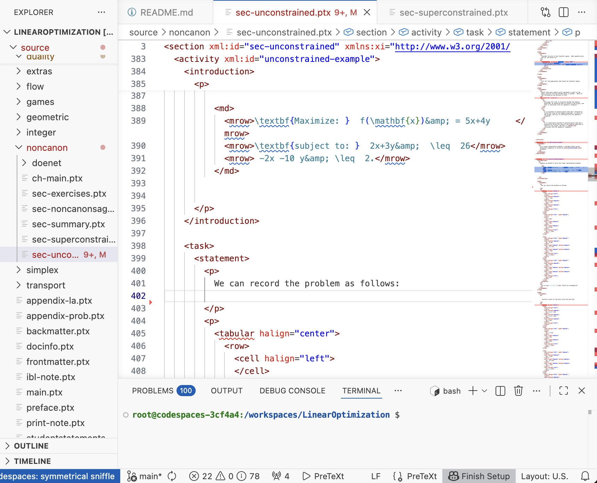

Exploring Open Educational Resource Development with PreTeXt
Lunch & Learn
Tien Chih
Oxford College of Emory University
Getting Started
https://github.com/PreTeXtBook/pretext-codespace
Why are you interested in OER development?
Why are you some features you would want from an educational resource?
OER as Academic Freedom
https://www.peter-keep.com/2026-01-07-OER-as-resistance/
WCAG
https://www.w3.org/TR/WCAG20/
PreTeXt
https://pretextbook.org/index.html
Interactivity
https://tienchih.github.io/tbil-stats/Sec_ConfidenceInterval.html
Multi-Modal
https://linopt.tienchih.org/
Write Meaning, Not Appearance.

https://github.com/TienChih/LinearOptimization
PreTeXt Guide
https://pretextbook.org/examples/sample-article/annotated/section-text-paragraphs.html
Annotated Sample Article
https://pretextbook.org/examples/sample-article/annotated/section-text-paragraphs.html
Thank You!